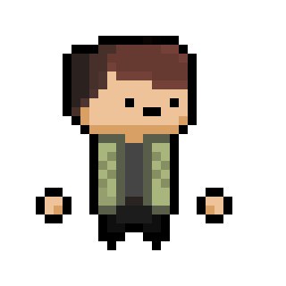
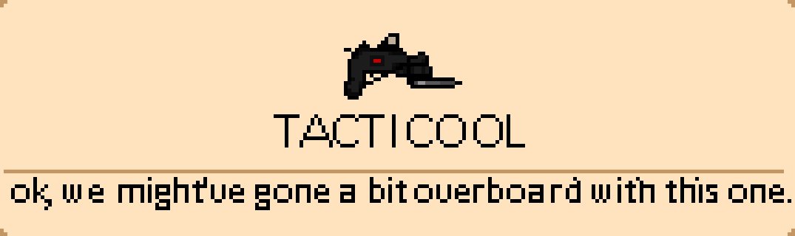
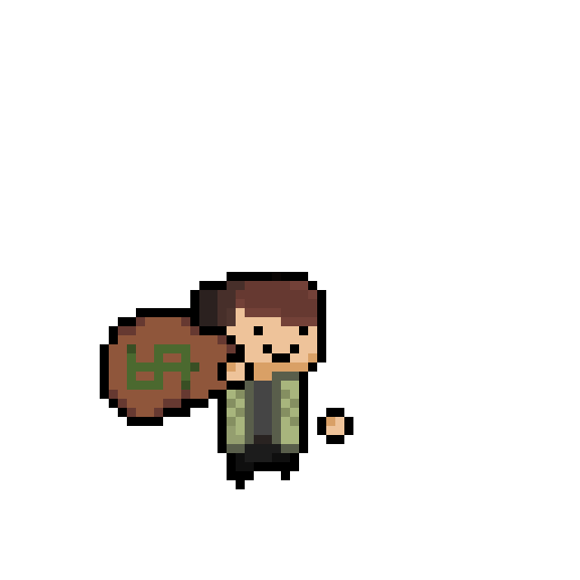

What is FRACTURED?
Looking for more information?
| Early game routes: |
Bank robbery, Becoming a CEO, Entering the Zombie apocalypse |
| Mid-game routes: | Espionage, Evolved bank robbery, Special Forces, Godzilla, Alien invasion, Nuclear Explosion |
| End-game routes: | Generic AAA game storyline, Evolved Espionage, Evolved Evolved Bank Robbery, Evolved Zombie Apocalypse, Space exploration, Evolved evolved Espionage |



Important thing to note: While FRACTURED is inspired by several roguelikes, it is not a roguelike.
Their biggest similarities will probably be found in the movement and gunplay.
The game has no procedural generation of any kind.
All “routes” are made by hand.